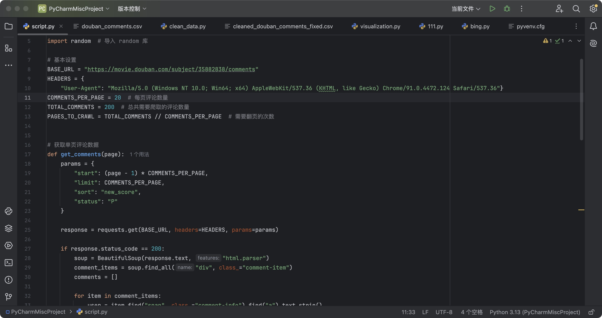
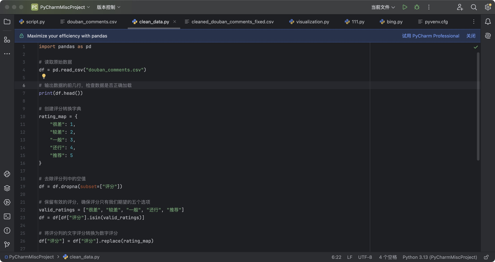

《某种物质》评论爬取过程
爬取过程概述
1. 数据源选择：
本次数据爬取的目标是豆瓣电影《某种物质》中的用户评论。豆瓣是一个广受欢迎的影评平台，提供丰富的评论数据，适合用于情感分析和评论可视化展示。
2. 爬虫架构：
爬虫使用 Python 语言，结合 requests 和 BeautifulSoup 库来抓取和解析豆瓣页面。通过 requests 发送 HTTP 请求获取页面 HTML，利用 BeautifulSoup 解析 HTML 内容，提取评论数据。
3. 爬取流程：
- 页面请求：通过 requests.get() 发送请求，获取《某种物质》电影评论页面的 HTML 内容。通过 params 参数指定请求的页码及评论数量。
- 数据提取：使用 BeautifulSoup 从 HTML 中提取评论数据，包括用户昵称、评论内容、评分、评论日期、点赞数。
- 分页抓取：根据设定的总评论数和每页评论数，爬取相应的多页数据，确保评论数据的完整性。
- 延时请求：使用 time.sleep() 和 random.uniform() 随机延时 2 到 5 秒，模拟人工行为，避免触发反爬机制。
4. 数据清洗：
- 评分转换：使用预定义的评分字典，将豆瓣中的文字评分（如“很差”、“较差”等）转换为数字评分（1 到 5），方便后续分析。
- 删除空值：清除评分和评论内容为空的行，确保数据质量。
- 格式转换：将评分列转换为整数类型，确保数据一致性。
5. 数据保存：
将清洗后的数据保存为 CSV 格式（cleaned_douban_comments_fixed.csv），方便后续分析和可视化展示。
6. 结果：
成功抓取并清洗了《某种物质》电影的评论数据，为后续的数据分析和可视化展示提供了干净、结构化的数据集。
爬取过程截图

